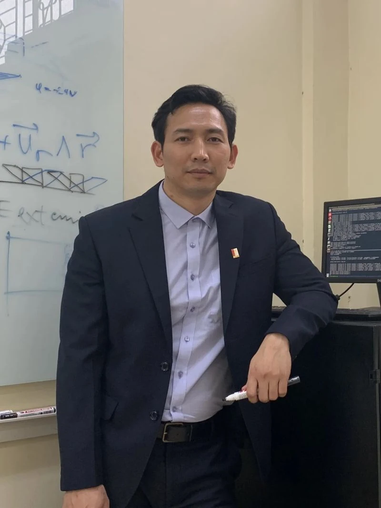
GS. TS. Phạm Văn Sáng
Giảng viên cao cấp Giáo Sư Tiến sỹ Trường Cơ khí Trung tâm nghiên cứu Công nghệ hàn và Ghép nối, PTN Khí động học (Đang quy hoạch) sang.phamvan@hust.edu.vn…
Đọc chi tiết ↗Không tìm thấy nội dung phù hợp.

Giảng viên cao cấp Giáo Sư Tiến sỹ Trường Cơ khí Trung tâm nghiên cứu Công nghệ hàn và Ghép nối, PTN Khí động học (Đang quy hoạch) sang.phamvan@hust.edu.vn…
Đọc chi tiết ↗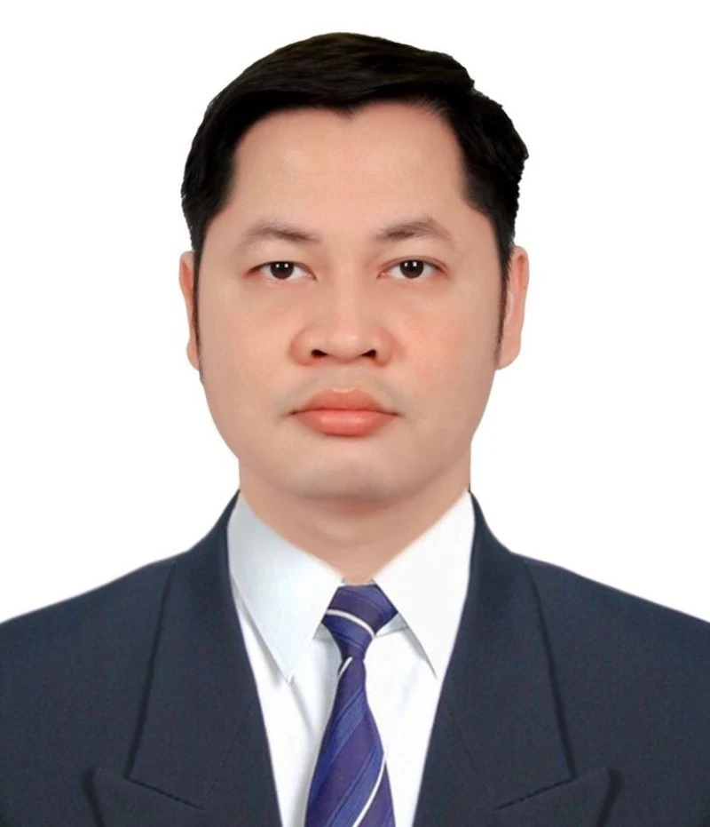
Phó giám đốc Trung tâm nghiên cứu Công nghệ hàn và Ghép nối Giảng viên Tiến sỹ Trường Cơ khí PTN NC các quá trình hàn, PTN Công nghệ In 3D và Cơ y sinh Email: duy.hanle@hust.edu.vn ; Github: TS. Hán Lê Duy | Dr. Duy Le Han - Acade…
Đọc chi tiết ↗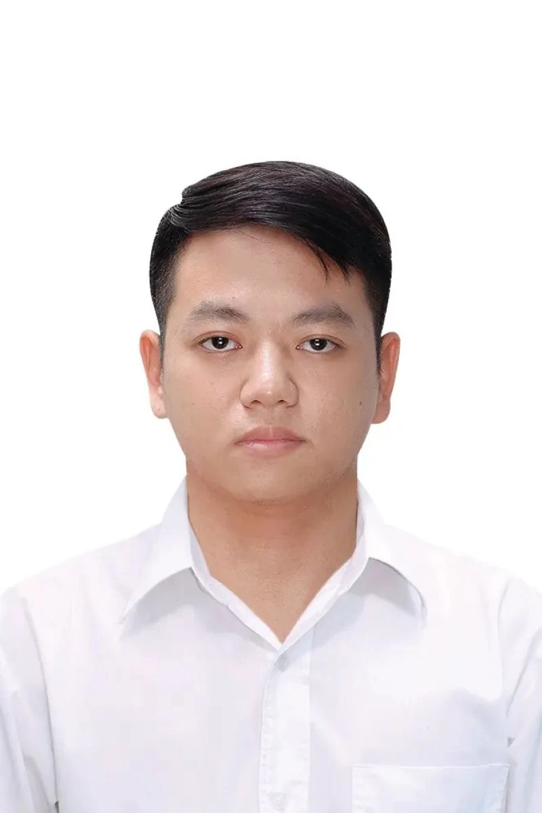
Giảng viên Tiến sỹ Trường Cơ khí Trung tâm nghiên cứu Công nghệ hàn và Ghép nối, PTN NC các quá trình hàn, PTN Công nghệ In 3D và Cơ y sinh (Đang quy hoạch), PTN NC các quá trình hàn ngoc.trinhquang@hust.edu.vn…
Đọc chi tiết ↗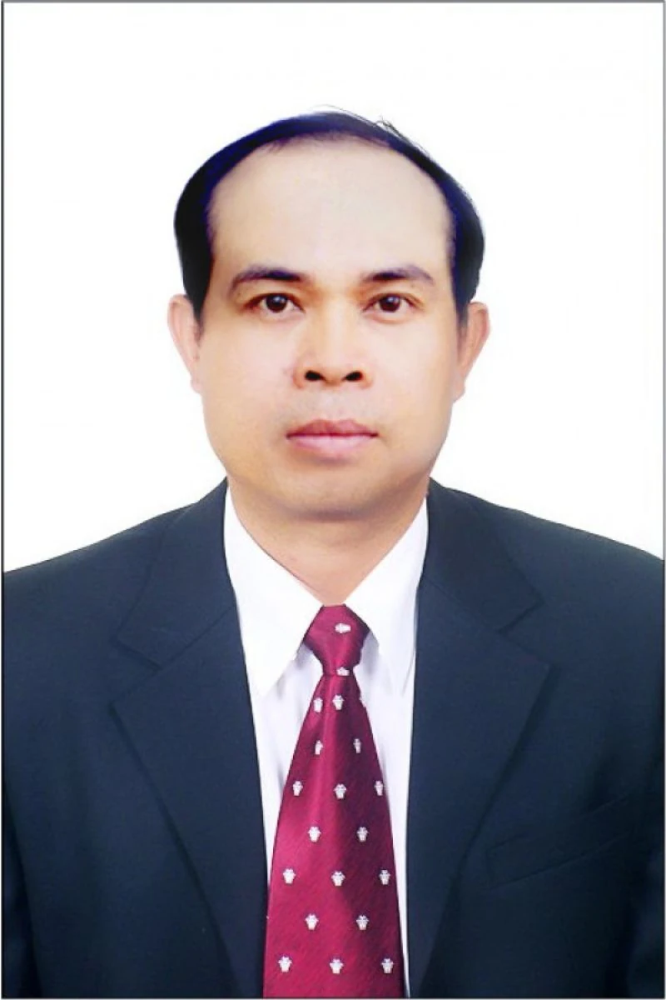
Chức vụ: Giảng viên cao cấp Chức danh kiêm nhiệm: Trưởng nhóm chuyên môn Thuộc đơn vị: Khoa Cơ khí chế tạo máy Địa chỉ email: hanh.buivan@hust.edu.vn Nhóm chuyên môn: HÀN VÀ CÔNG NGHỆ KIM LOẠI ĐÀO TẠO 10/1980 – 05/1985: Kỹ sư Chế …
Đọc chi tiết ↗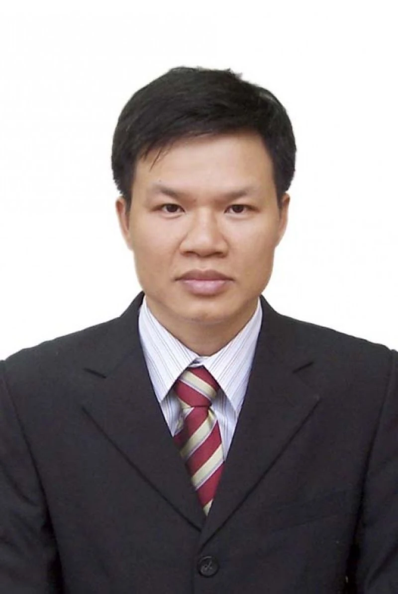
Chức vụ: Giảng viên cao cấp Thuộc đơn vị: Khoa Cơ khí chế tạo máy Địa chỉ email: duong.nguyentien@hust.edu.vn Nhóm chuyên môn: HÀN VÀ CÔNG NGHỆ KIM LOẠI Địa chỉ làm việc: Phòng 513M, nhà C7, Trường ĐHBK Hà nội Đào tạo 09/1990 – 06…
Đọc chi tiết ↗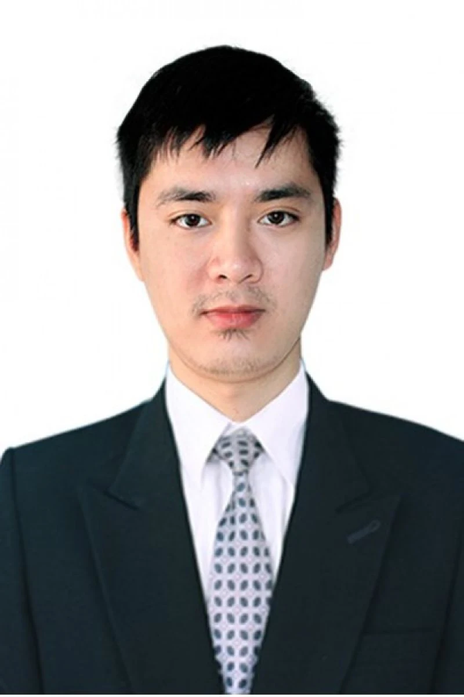
Chức vụ: Giảng viên Thuộc đơn vị: Khoa Cơ khí chế tạo máy Địa chỉ email: lam.tran@hust.edu.vn Nhóm chuyên môn: HÀN VÀ CÔNG NGHỆ KIM LOẠI Địa chỉ làm việc: Phòng 513M, nhà C7, Trường ĐHBK Hà nội Đào tạo 09/2001 – 06/2006: Kỹ sư Cơ …
Đọc chi tiết ↗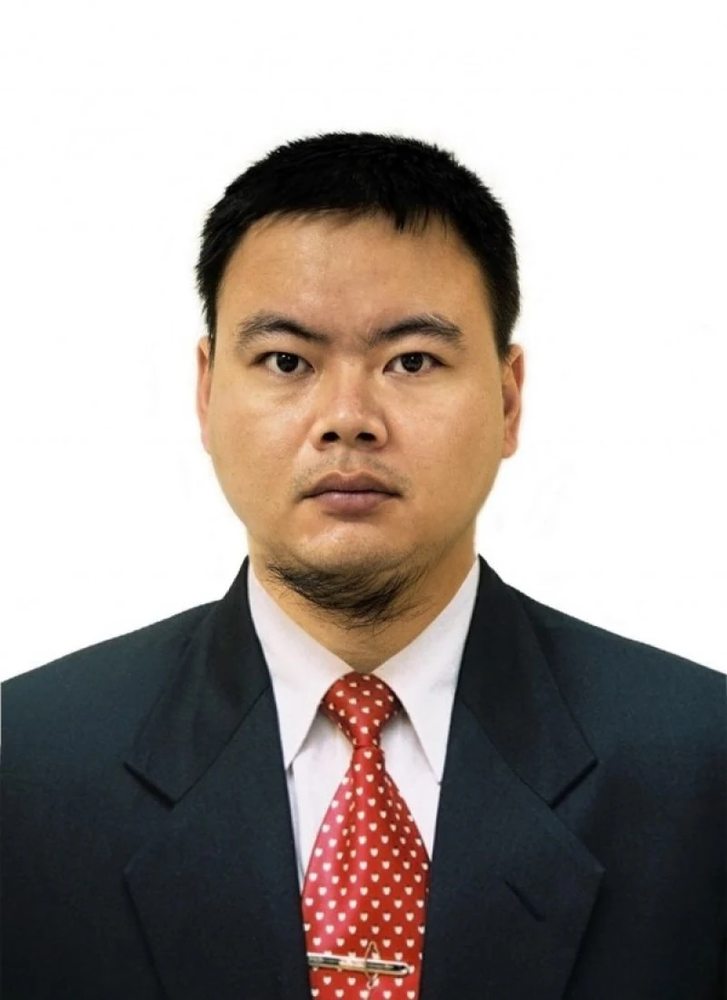
Chức vụ: Giảng Viên Thuộc đơn vị: Khoa Cơ khí chế tạo máy Địa chỉ email: le.phanhuy@hust.edu.vn Nhóm chuyên môn: HÀN VÀ CÔNG NGHỆ KIM LOẠI Địa chỉ làm việc: Phòng 513M, nhà C7, Trường ĐHBK Hà nội Đào tạo 09/2004 – 06/2009: Kỹ sư C…
Đọc chi tiết ↗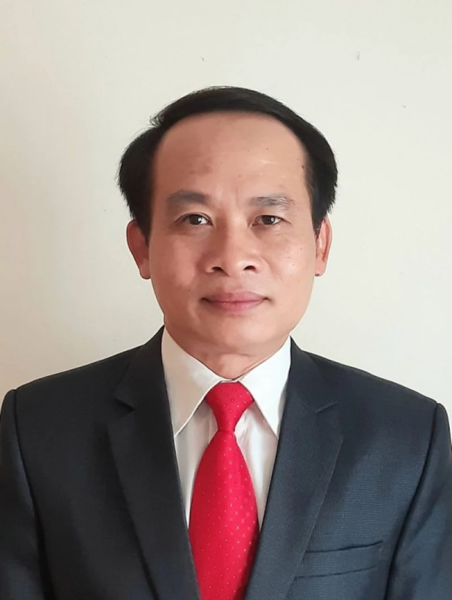
Chức vụ: Giảng viên cao cấp Thuộc đơn vị: Khoa Cơ khí chế tạo máy Địa chỉ email: toai.vudinh@hust.edu.vn Nhóm chuyên môn: HÀN VÀ CÔNG NGHỆ KIM LOẠI Địa chỉ làm việc: Phòng 513M, nhà C7, Trường ĐHBK Hà nội Đào tạo 09/1991–05/1996: …
Đọc chi tiết ↗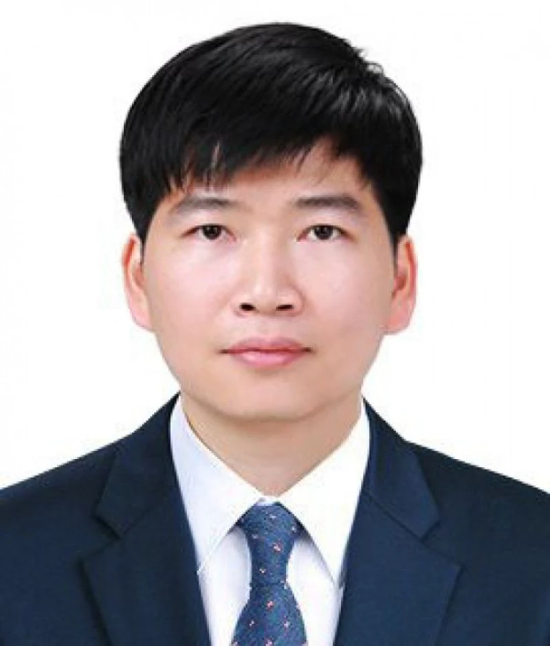
Chức vụ: Giảng viên Thuộc đơn vị: Khoa Cơ khí chế tạo máy Địa chỉ email: tuan.nguyenthanh@hust.edu.vn Nhóm chuyên môn: HÌNH HỌA – VẼ KỸ THUẬT Địa chỉ làm việc: Phòng 510M, nhà C7, Trường ĐHBK Hà nội Các môn giảng dạy Đồ Họa Kỹ Thu…
Đọc chi tiết ↗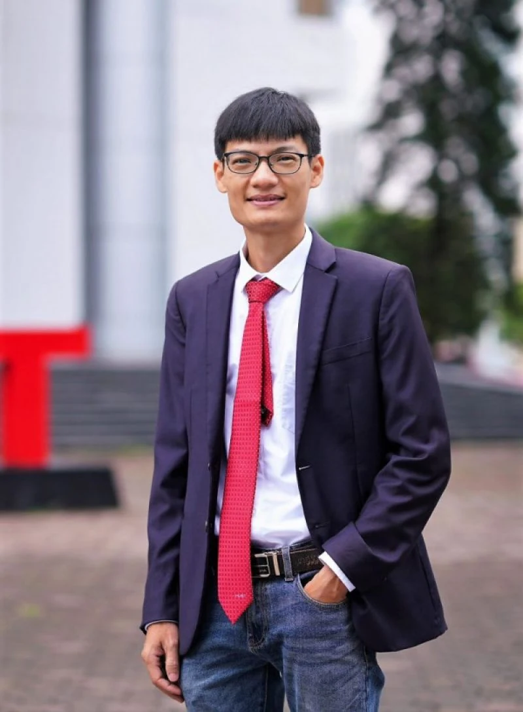
Chức vụ: Giảng Viên Thuộc đơn vị: Khoa Cơ khí chế tạo máy Địa chỉ email: bo.dinhhong@hust.edu.vn Nhóm chuyên môn: MÁY & MA SÁT HỌC Địa chỉ làm việc: Phòng 517M – C7, Đại học Bách Khoa Hà Nội Các môn giảng dạy Trang bị điện cho máy…
Đọc chi tiết ↗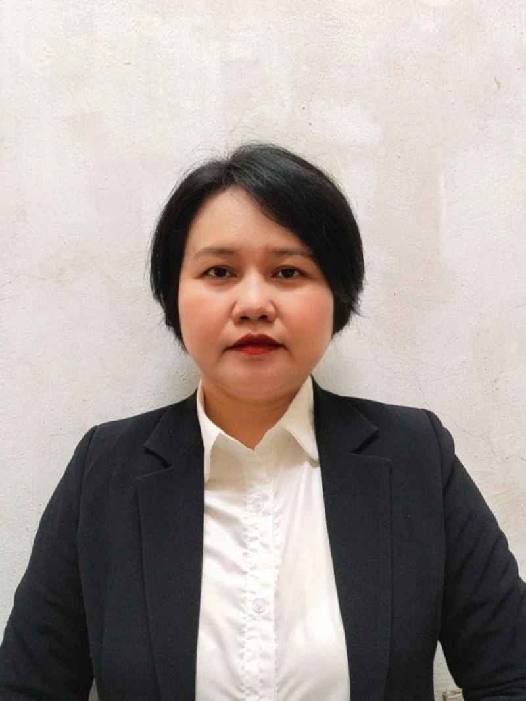
Chức vụ: Cán bộ kỹ thuật Thuộc đơn vị: Trung tâm kỹ thuật cơ khí Địa chỉ email: doan.tranthimai@hust.edu.vn Địa chỉ làm việc: Phòng 513M, nhà C7, Trường ĐHBK Hà nội Đào tạo 1998 – 2003: Kỹ sư Điện tại trường Đại học Kỹ thuật Công …
Đọc chi tiết ↗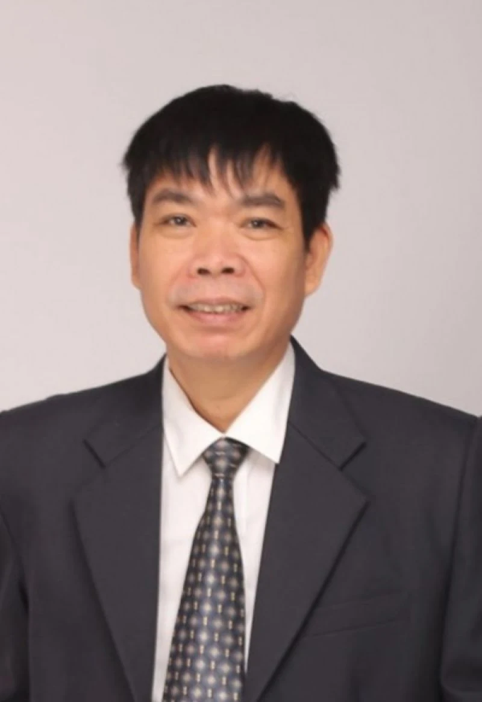
Chức vụ: Cán bộ kỹ thuật Thuộc đơn vị: Trung tâm kỹ thuật cơ khí Địa chỉ email: tuong.nguyenmanh@hust.edu.vn Địa chỉ làm việc: Phòng 513M, nhà C7, Trường ĐHBK Hà nội Đào tạo: 1999 – 2004: Kỹ sư Cơ khí tại trường Đại học Bách khoa …
Đọc chi tiết ↗